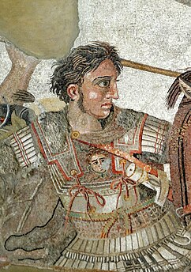
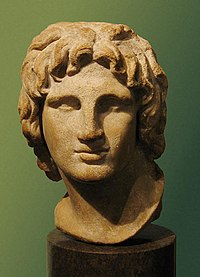
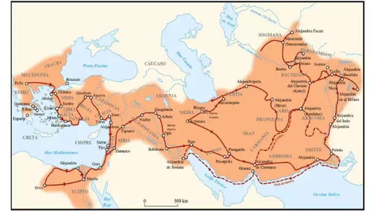

Gençlik Yılları
İskender, Antik Yunan ayı Hekatombaion'un 16. gününde, Makedonya Krallığı'nın başkenti Pella'da doğdu. Her ne kadar kesin tarih belirsiz olsa da bu, muhtemelen MÖ. 20 Temmuz 356'ya tekabül etmektedir. Babası Makedonya Kralı II. Filip, annesi ise Epir Kralı I. Neoptolemus'un kızı Olympias idi. Her ne kadar II. Filip'in yedi ya da sekiz eşi olsa da, Olympias muhtemelen İskender'i doğurduğu için, onun göz bebeğiydi. İskender'in doğumu ve çocukluğunu konu alan pek çok efsane vardır. Antik Yunan biyografi yazarı Plutarhos'a göre Filip'le gerdeğe gireceği günün arifesinde Olympias, rüyasında ölmeden önce dört bir yana alevler saçılmasına neden olan, rahmine çakan bir yıldırım gördü. Nikahtan bir süre sonra, Filip'in rüyasında kendinin karısının rahmini üzerine aslan resmi oyulmuş bir mühürle koruduğu söylenir. Plutarhos, bu rüyanın farklı yorumlarını sundu: Rahminin mühürlü olduğundan anlaşılacağı üzere, Olympias'ın nikahtan önce hamile olması veya İskender'in babasının Zeus olması. Antik Dönem yorumcuları, kimileri Olympias'ın bunu İskender'e söylediğini, kimileri de öneriyi din dışı bularak reddettiğini iddia ederek İskender'in Tanrı soyluluğu hakkındaki hikâyesini , hırslı Olympia'nın yayıp yaymadığı konusunda görüş ayrılığına vardılar.
Fetihler
Büyük İskender'in fethettiği yerler o zamanki bilinen dünyanın neredeyse tamamını meydana getirmektedir. Bu nedenle Büyük İskender'e dünya fatihi de demek mümkündür. Büyük İskender ya da kendi adıyla Makedonya Kralı III. Aleksandros, MÖ 21 Temmuz 356 senesinde dünyaya geldi ve MÖ 10 Haziran 323 senesinde hayata veda etti. Hayatı savaşlarda geçen Büyük İskender'in yalnızca 33 senelik bir ömrü olduğu düşünüldüğünde başarılarının ne kadar büyük olduğu daha net bir şekilde anlaşılabilecektir. Büyük İskender'in fethettiği yerler ise bölgelere ayrıldığında daha net bir şekilde anlaşılacaktır. Büyük İskender'in fethettiği yerler sırasıyla: Anadolu, Mısır, Pers İmparatorluğu, Mezopotamya, İran ve Hindistan'dır. Büyük İskender, oldukça büyük bir komutan olmanın yanında dünya tarihinde de köklü değişimlere yol açmış bir komutandır. Kendisinin ölümünden sonra fethettiği yerlere Yunan kültürü yayılmış ve dünya üzerinde genel bir Helenleşme yani Yunanlaşma dönemi başlamıştır. Öyle ki İç Anadolu'da yüzyıllarca Grekçe (eski Yunan dili) ana dil olarak konuşulmuştur. Mezopotamya ve Asya'da da Yunan kültürünün etkileri tarihçiler tarafından ortaya çıkartılmıştır.
İskender'den Sonra Makedon İmparatorluğu
Büyük İskender'in ölümünden sonrası için bir varis seçmemesi generalleri arasında bir rekabet ortamına yol açtı. İmparatorluk Cassander, Batlamyus, Antigonus ve Seleukos arasında paylaştırıldı. Cassander, İskender'in uzun zamandır arkadaşıydı ve Makedon Krallığı üzerinde hak iddia etti. Elini güçlendirmek içinde İskender'in karısını, oğlunu ve annesi Olimpia'yı idam ettirdi. I. Batlamyus, Mısır'da Ptolemaios Hanedanlığı'nı kurdu ve hanedan üç yüzyıl Mısır topraklarına hükmetti. Ayrıca, I. Batlamyus, Büyük İskender'in cesedini kendi ülkesine kaçırmış ve kendisi için yenilmez bir imaj yaratmak istemiştir. İskender'in diğer halefi olan Seleukus, "Diadohlar" olarak adlandırılan İskender'in halefleri içinde en uzun süre hüküm süren kişi olmuştur. Mezopotamya, Anadolu ve Hindistan'ın bazı bölgelerini sınırları içine alan Seleukus İmparatorluğu M.Ö. 63 yılına kadar ayakta kalmıştır. Büyük İskender'in ölümünden sonra mirası olan Helen kültürünü yayma sorumluluğu halefleri için kısa vadede başarısız olmuşsa da Makedonların Avrupalılarla evlenmeye teşvik edilmesi ve İskender'in Asya'da kurduğu şehirlerle birlikte uzun vadede Helenistik kültür tüm Antik Çağ'a damga vurmuştur.